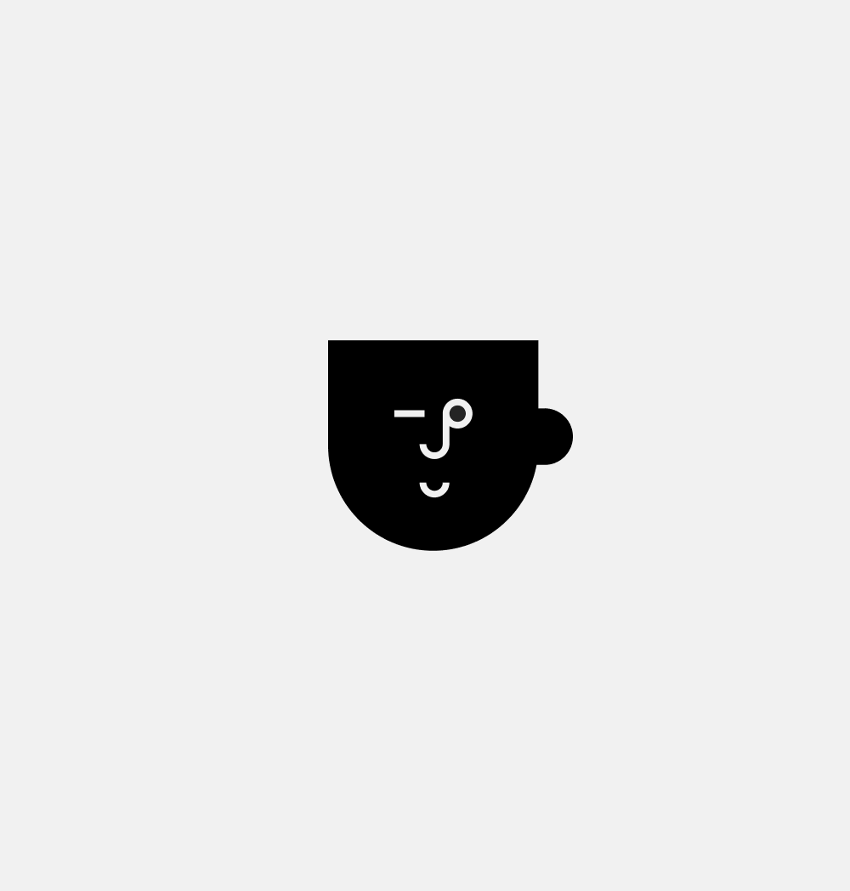
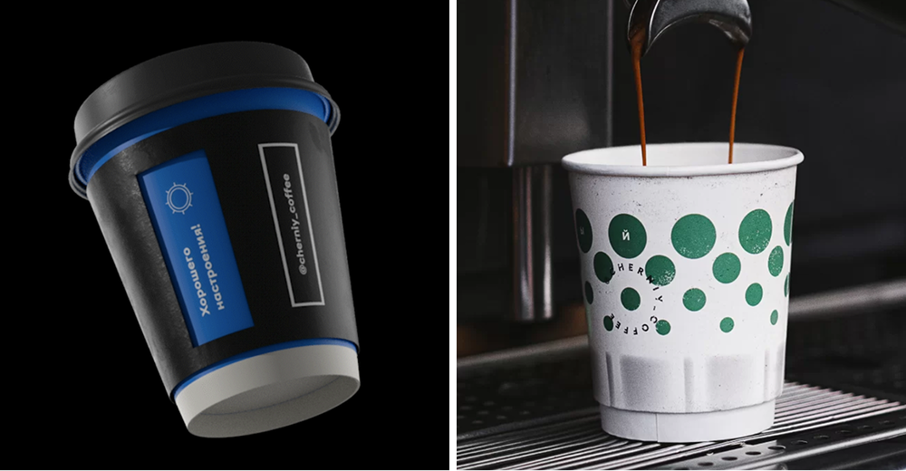
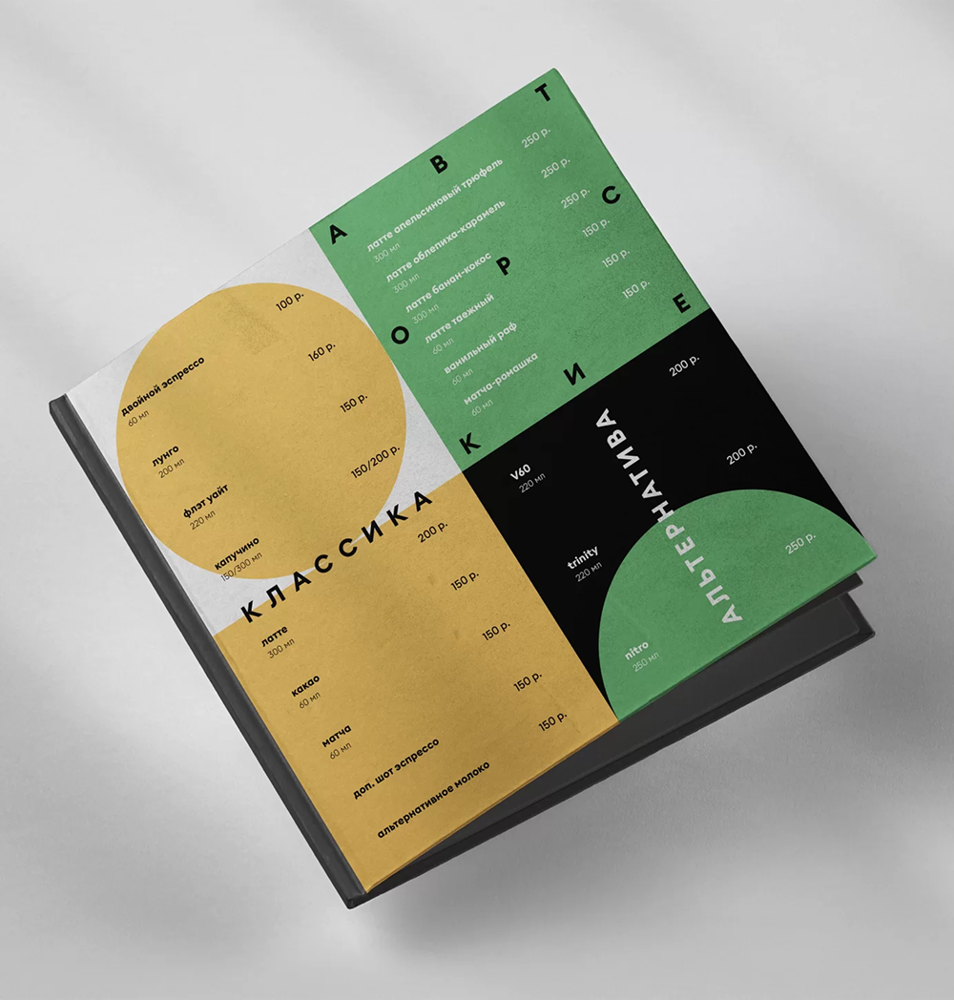
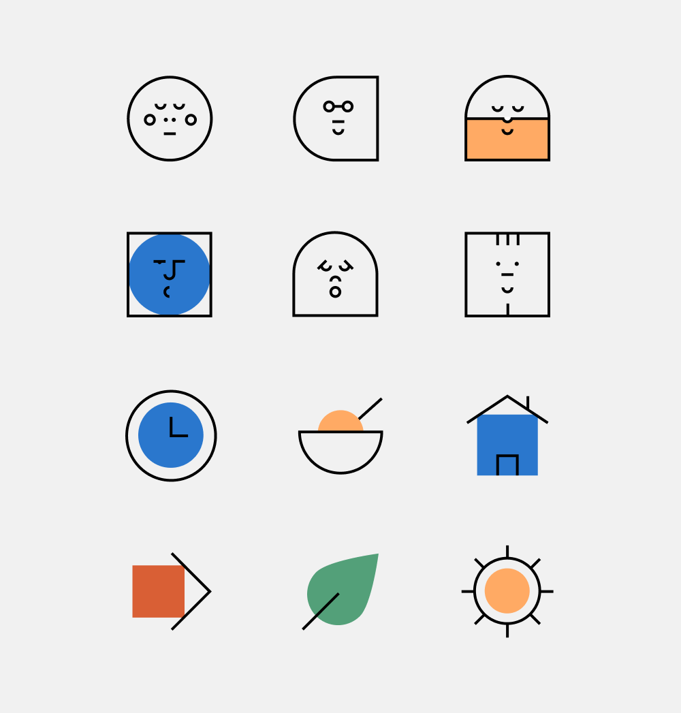
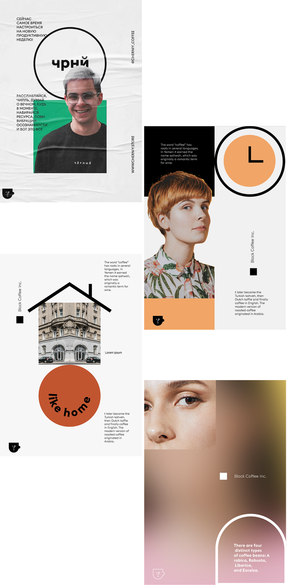
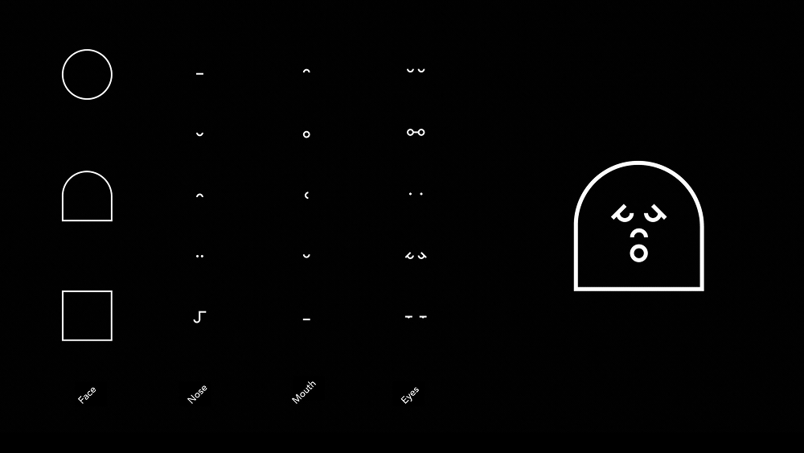

Groovy is a specialty coffee brand rooted in third wave philosophy — where coffee is treated as craft, and the barista acts as a cultural connector. The identity needed to feel as warm and distinctive as the experience itself.
At its core is a character-driven logo: a winking face that greets from signage and shifts expression across applications, echoing the human nuance baristas bring to each interaction. A palette of soft, pastel tones intentionally departs from the austerity typical of specialty coffee branding.
Each location carries its own theme — film, barbering, succulents — while the overarching system keeps everything cohesive. Paper cup graphics draw on references like Soviet ceramics, faded polka dots, and geometric folk motifs, creating a texture that feels familiar rather than manufactured.
The result is a brand that goes beyond serving coffee — it creates a scene people want to return to.





